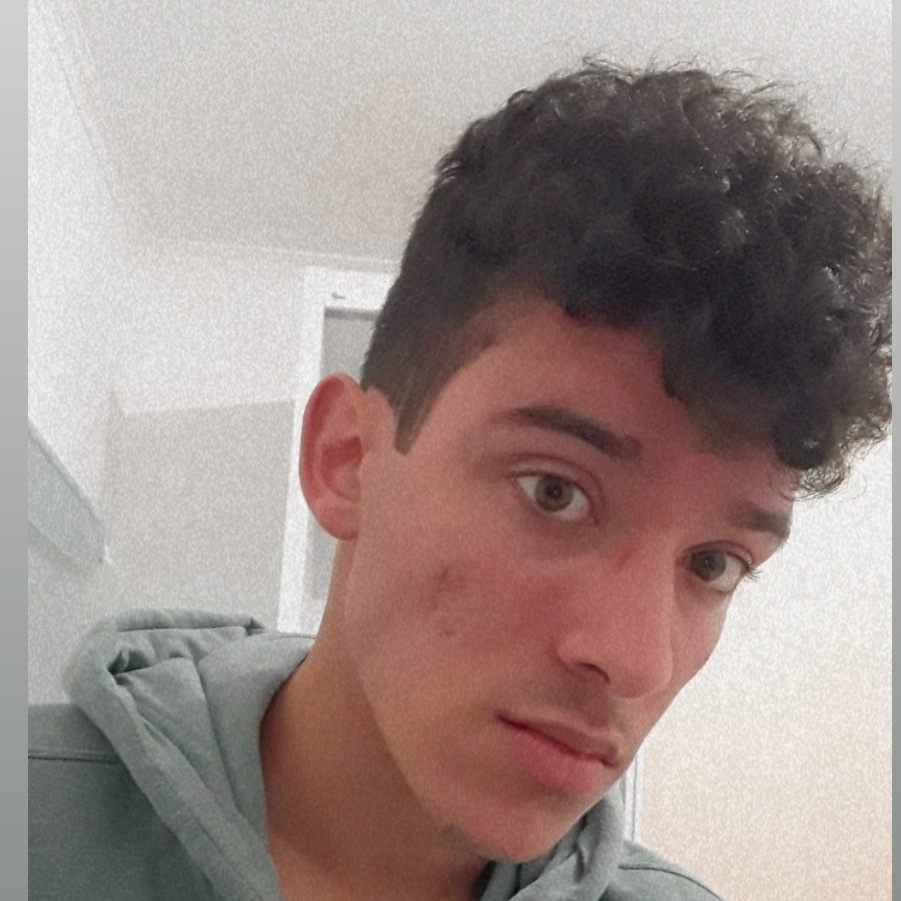
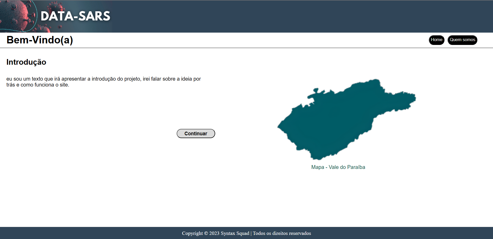

Bem Vindo(a)! Eu sou o João e este é um pouco dos meus projetos acadêmicos e também pessoais. Sou Técnico em Desenvolvimento de Sistemas e já desenvolvi diversos projetos utilizando diferentes linguagens de programação como Javascript, React, Python... Além de frameworks e até Design.

Data-Sars é um dos projetos do API (Aprendizagem pro Projetos Integrados) da FATEC, desenvolvida pela equipe Syntax Squad, da qual eu faço parte. O Data-Sars é uma aplicação web cujo objetivo é ampliar e facilitar o acesso à informações baseadas em dados do Data-Sus Tabnet e outros sites do governo a respeito da Covid longa: os Sintomas pós Covid-19, no Vale do Paraíba-SP. Visualiar Projeto

Desenvolvido pelo Syntax Squad, o Callgenie é uma aplicação react para gerenciamento de Chamados, que liga de forma fácil Administrador, Suporte e Cliente. Visualizar Projeto